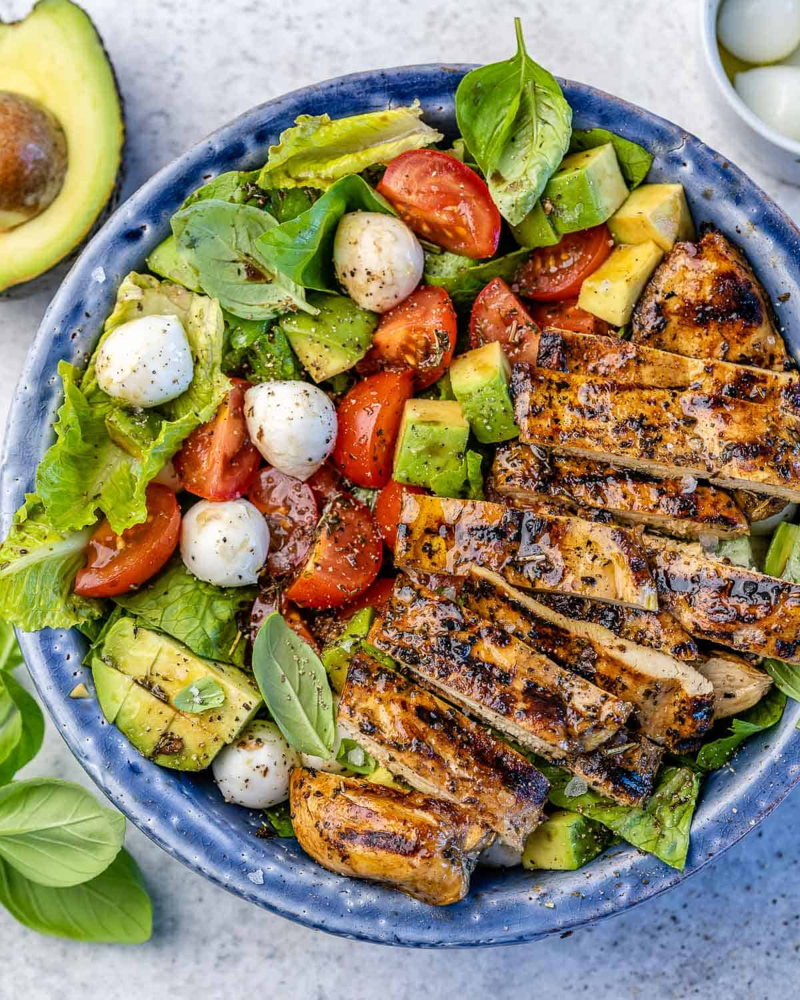

Caprese Salad with Grilled Chicken

Ingredients:
- 2 boneless, skinless chicken breasts
- 1 tablespoon olive oil
- Salt and pepper to taste
- 1 cup cherry tomatoes (halved)
- 1 cup fresh mozzarella (cut into bite-sized pieces)
- 1/4 cup fresh basil leaves (torn)
- Balsamic glaze for drizzling
Instructions:
- Preheat grill to medium-high heat.
- Brush chicken breasts with olive oil and season with salt and pepper.
- Grill chicken for 6-8 minutes per side or until fully cooked.
- Let chicken rest for a few minutes, then slice into thin strips.
- In a large bowl, combine cherry tomatoes, fresh mozzarella, and torn basil.
- Add the grilled chicken strips to the bowl.
- Drizzle balsamic glaze over the salad and toss gently to combine.
- Serve immediately and enjoy!